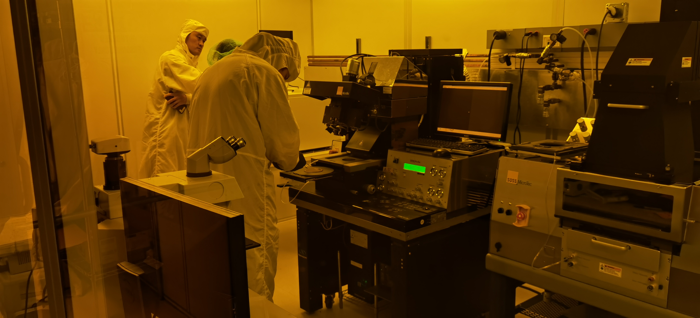
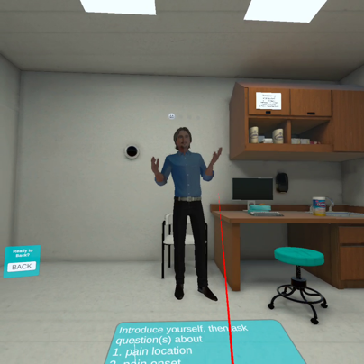

AI literacy
Question formulation, information behavior, reflection, verification, judgment, and responsible participation in AI-supported learning.
Research
I study how learners question, practice, reflect, and exercise agency in technology-rich STEM environments. My work combines learning-system design with mixed methods, usability research, eye tracking, and qualitative inquiry.
Research agenda
Across projects, I ask not only whether a technology works, but how learners experience it, what responsibility remains with them, and what design choices support meaningful learning.
Question formulation, information behavior, reflection, verification, judgment, and responsible participation in AI-supported learning.
VR, MR, and AR environments that connect conceptual understanding with spatial, embodied, and professional practice.
Mixed methods, eye tracking, interviews, performance evidence, and interaction data used to keep human experience and judgment central to design.
Selected research
Ongoing · Four 2026 presentations
How do learners ask productive questions, evaluate information, reflect with AI, and retain responsibility for decisions?
This program connects two scoping reviews, Time2Reflect, and a CEHD Graduate Research Symposium presentation. Together, these strands examine question-centered information behavior, AI-literacy practices across design-thinking phases, reflective system design, and the responsibilities learners retain when working with AI.
Published and ongoing
A low-risk environment for guided, repeatable practice with photolithography and related cleanroom procedures.
The research progresses from learner confidence and expert-guided redesign to eye tracking, physical-cleanroom follow-up, scaffold fading, and learner-initiated AI.

Published and under review
Immersive, conversational practice designed to supplement preservice nurses’ preparation for patient encounters.
Studies examine usability, self-efficacy, learner experience, transfer-oriented design, and the relationship between realism and learner agency. The system supplements rather than replaces standardized-patient practice.

Published
A mixed-reality and generative-AI environment for embodied learning of U.S. geography.
VirtualGeo investigates how movement, spatial interaction, and conversational support can help international students build geographic knowledge while making design limitations and learner experience visible.

Collaborative research
XR environments for making hazardous-weather science observable, discussable, and actionable.
Related studies examine augmented-reality meteorology, desktop-VR tornado learning, AI-supported interviewing, science communication, and safe learning design around severe weather.
Research outcomes